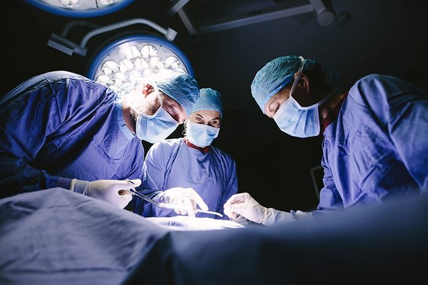
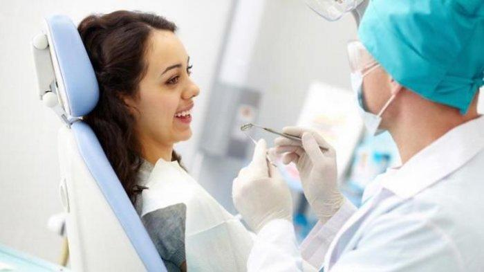
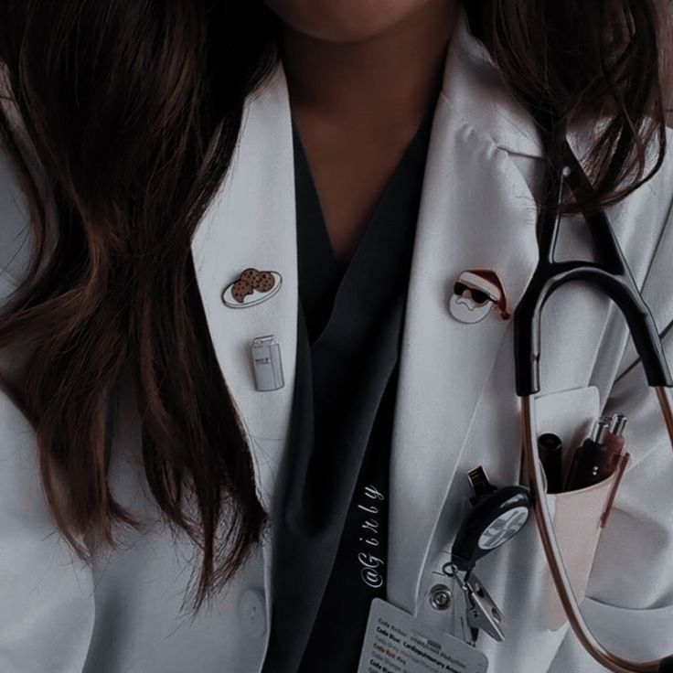

DOKTER INSPIRASIKU
JUN, 10TH
2024

Hello, sesuai dengan tema diatas saya ingin menceritakan tentang para dokter yang telah berjasa menyembuhkan banyak orang,Tanpa seorang dokter kita tak akan bisa sembuh dengan bantuan mereka bukan, maka dari itu mari bersamaku untuk lebih kenal lagi tentang mereka yuk!
DOKTER PSIKIATER
Dokter spesialis kejiwaan atau psikiater adalah seorang ahli medis yang memiliki spesialisasi di bidang kesehatan mental. Psikiatri sendiri merupakan cabang ilmu kedokteran yang berfokus pada pencegahan, diagnosis, dan pengobatan gangguan mental, perilaku, dan emosional.
DOKTER bedah
Dokter bedah adalah dokter spesialis yang mengobati penyakit, cedera, atau kondisi gawat darurat pada tubuh melalui metode bedah (operatif) dan obat-obatan. Untuk menjadi dokter bedah, seseorang harus menyelesaikan pendidikan dan profesi dokter umum, lalu menyelesaikan pendidikan spesialis ilmu bedah. Dalam praktiknya, dokter spesialis bedah tak jarang menerima rujukan dari dokter umum atau dokter spesialis lain terkait kondisi pasien yang membutuhkan tindakan bedah. Kemudian, dokter bedah akan melakukan diagnosis sesuai keahlian dan ilmu yang dimiliki untuk menentukan perlu atau tidaknya prosedur bedah dilakukan.
DOKTER GIGI
Praktik kedokteran gigi umum meliputi tindakan preventif, promotif, kuratif, dan rehabilitatif terhadap kondisi gigi dan mulut individu ataupun masyarakat. Tindakan perawatan yang dapat dilakukan oleh seorang dokter gigi umum antara lain penambalan gigi berlubang, pembersihan karang gigi, pencabutan gigi, pembuatan gigi tiruan, merapikan gigi dengan alat ortodonsia lepasan hingga mendeteksi penyakit gigi dan mulut secara umum.
About me
SAYA INGIN MENJADI SEORANG DOKTER YANG BERGUNA UNTUK MASYARAKAT SUATU SAAT NANTI
POPULER POST


FOLLOW ME
SEMOGA INFORMASI INI BERMANFAAT